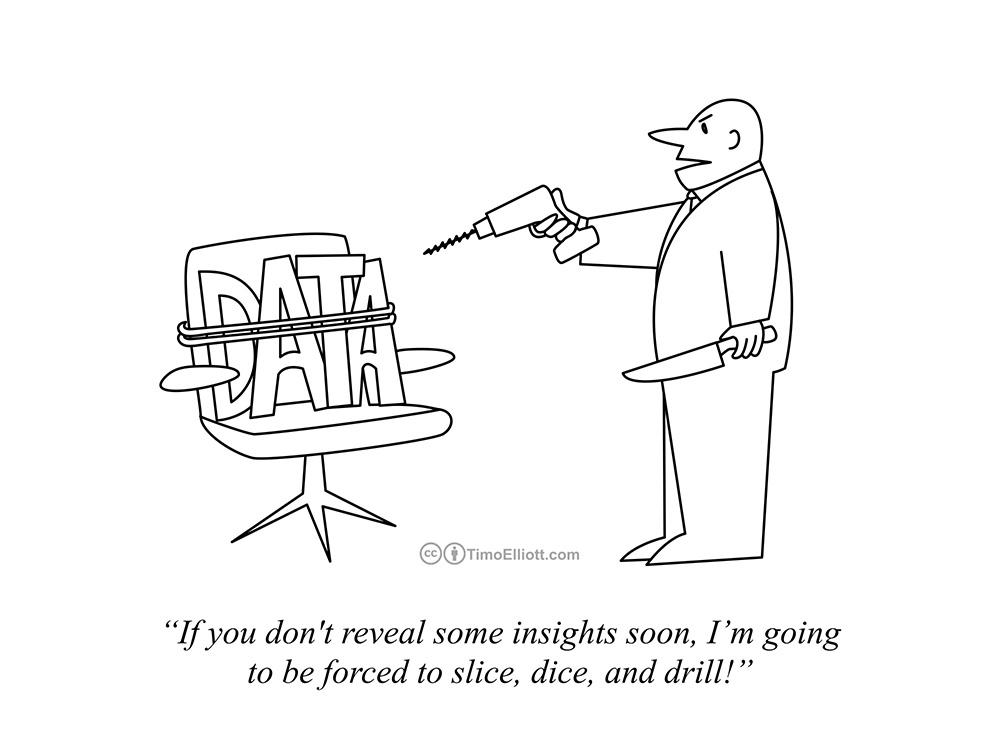
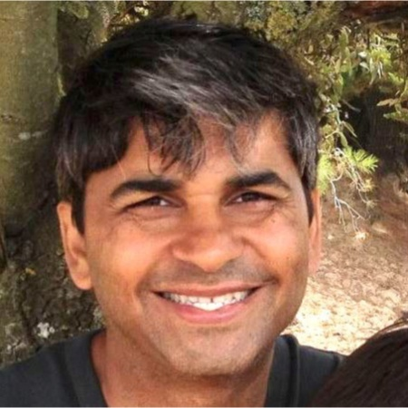

Thanks to a dedicated world-leading group of data scientist who are trying to help biulding the next generation of data scientist, here is an outline of their 3rd episode of Data Science Office Hours, talking about various type of work they did during their last week.
Beau Walker: I'm really excited to be with all of you, here we're all really excited to have a great discussion and another office hours. How today's structures are going to work is similar to our last episode. We’re going to each talk about what we've been working on this week, kind of day in the life of a real data scientist and then we want to answer your questions.
We go in alphabetical order:
Andreas Kretz:I've been doing this week a lot of engineering work again, I've been working on a lot of spark scripts (and I love the spark), spark streaming, mainly streaming data from Kafka into spark and then doing some analytics work and then streaming it back into a Kafka topic, so you can chain multiple spark chops together or then uploading it to a big data system. So I'm in a Hadoop environment, so this was the main topic of this week, I'm starting to get the hang of it. Spark is absolutely awesome, when you think about the option of distributed processing and analytics we have in Spark, It’s crazy compared to older stuff like MapReduce. That was the main topic of this week and if someone has a question about that I can get into that.
Beau Walker:I started a new job last week, I'm really excited. it's helping build a data science team from the ground up and usually with that means that before you can dive into really cool modeling techniques you have to make sure your data is ready for that and especially at my company they just hired two data scientists and a data engineer and just starting from scratch. So there's a lot of work to do to get our datasets ready and the processing productionalized while we're exploring what different models we can use. So I spent a lot of this week working on integrating datasets and there's actually an enjoyable change of pace from what I've been doing in the past couple of weeks. and I think if that's all that I did that would be really tedious but the one thing I love about data science is that it seems like it’s changing day to day and as you're working through different parts of a project you get to do different things. And doing a lot of the data manipulation with the tidyverse deep layer package makes data manipulation so fun.
Eric Weber:I'm gonna jump on the spark bandwagon actually, if there's a message that you guys want to take away is that a lot of companies are moving towards spark. we've started to use a lot more spark at LinkedIn to try to decrease our processing time, development of metrics, tracking and metrics becomes a lot more efficient over time. So I certainly encourage anyone watching and thinking about where things are going, spark is a big deal. It’s something important to consider to have in your tool set in addition to everything else. Another big thing from the week was that really scary feeling after I spent the end of the quarter building a model and this was the first time I initially did a readout on how that model was performing in the real world. But it's a really good feeling to see that something you developed is taking care of the business use case that you intended it to, that it's doing the right thing that it can affect the business. So those have been big priorities for me this week. One is evaluating the ongoing health of the models that we build and also in a lot of ways leveling up my own technical skills particularly with spark.
Favio Vázquez:Thank all of you for being here we're all really excited about this. What I've been doing this week is actually working with spark in time series. This is something that's not very easy because we're really used to work with R and NTS or in Python but not in spark. there's been some libraries like Flint that is a really good library and I've been trying to use it and I've been trying to get people in my company to accept the library because when you have a new library, you have to convince the engineers that they have to install the library in the cluster. So I've been doing some proof of concepts with the library and because we're in a bank and we have a lot of data from our customers that is transactional, it's like how are they changing their income or their output or how they are doing business or anything and this is a process that fits really well in a time series but we have a lot of data so it's not easy to do it with only Pandas or Python.
The other thing I've been doing in past few weeks is studying deep learning, I've been really trying to jump in the area for last two months and I've been sharing my knowledge. If you follow me you could see, I think I had two articles toward data science and that's from where I work, how did I get started, where I come from and how to study. I think there's a lot of good resources out there and we have the pleasure of having here Tarry, he's working with a team with Andrew Ng and deep learning AI and I think the best course out there for deep learning is the Andrew Ng right now, I think I said it before. and yeah most of my week has been just studying both papers and the MOOCs of the learning
Sarah Nooravi:I think in a data science job your week to week is going to vary depending on what projects you're working on. Last week I was doing a lot more optimization this week I'm doing a lot more automation. From the automation standpoint things might not seem as interesting but when you start to discover new libraries how you can go about automating something and not only in the most efficient way but also maybe a creative way it really challenges you. So what we've been doing is kind of translating information that otherwise would live in a database and not be available to anyone, outputting that in a way where people who don't know how to code can actually read it, transferring it to an Excel spreadsheet. so we've been using a library called XlsxWriter which is pretty cool you can just translate right off of Python, just create a script to output directly to excel so that was really cool.
also part of data Sciences is truth-telling and storytelling so the storytelling aspect of it is the other thing that I've been working on this week which is basically translating the data into a visualization that is meaningful, that people can just look at it and directly understand what's going on, for example I work in advertising. So we're taking like Facebook segments and audience segments and plotting them in a way using Matplotlib. Matplotlib and Seaborn are such powerful visualization packages, it's fascinating when you look at the most basic plot that you can make in Matplotlib and all the other things that you can do to it. So I got fascinated in plots that I was making and that becomes a very important part of translating what you're doing into something that the clients can understand or people internally can understand. That’s been my week.
 Tarry Singh:Thank you everybody … and it's an honor for me to be part of this group and share a couple of important things with you. For me my week was just doing the routine as I've been wrapping up things that I've been doing in Berlin two weeks ago. I gave a workshop on capsules we were working on writing manifold learning theories, trying to put those theories into capsule. that's really interesting and I've reached out to Geoffrey Hinton and his team as well in Toronto and it's what probably we're gonna be working together - what else hey there's a dog …(Beau dog enters the scene…:D)
Beau Walker: She wants to join me… (:D)
Tarry Singh: Awesome! this week I'm writing my book I'm preparing for a workshop in which all the questions of deep learning and machine learning are asked by people who been in this industry for like 10-20 years, so teaching doctor and postdoctoral people on deep learning, even questions a multi-dimensional time series, how to use them in recurrent neural network. This week has been really busy we just launched yesterday the fifth course for recurrent neural network on Coursera. … What else I had this week is working on the research report and planning another bioinformatics workshop that I have next week in Germany, Berlin and this is like a specific workshop with NVIDIA is hoping to get their GPUs power to the workshop attendees. so I'll be giving a workshop on skin cancer detection or something else with CNN's. it's really awesome I mean the most important thing is the inspiration and the beauty that we were beginning to see, it almost seems as if I'm living in the 1880s when people were discovering electricity, people didn't know what to do with it and we were just working and running away with their own model being excited and at some point of time there's gonna be convergence of all these models: like reinforcement learning, recurrent neural networks, GANs etc. they will be standardized and I think the whole our responsibility to get you guys on board as soon as possible. … my week has been really busy and to me I wish I had like two weeks in a week so I could do more, it has never made me feel so excited…. one last thing obviously we're gonna be in Iraq in March so there's gonna be working with women from Iraq, Kurdistan and Syria. It’s so amazing and Tunisia workshop we were planning as well. …I hope you guys keep working with us and you and it’s an honor to have this opportunity to help you guys thank you
To be continued...